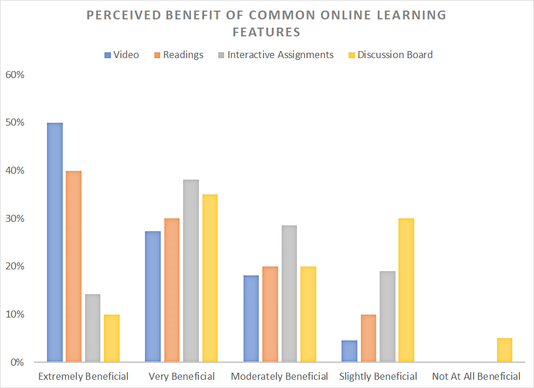
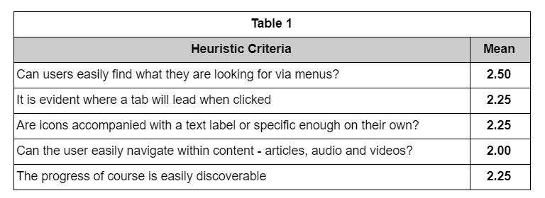

Overview
Format: Semester-long group project
Roles: Researcher
Product: Learning management system owned by OpenSAP, a subsidiary of SAP. The learning management system is free to use, offering technology and design-related courses to learners around the world. All courses are moderated by OpenSAP employees.
The Challenge: Uncover pain points within OpenSAP’s learning management system; provide recommendations to increase learner engagement, decrease reliance on moderators, and enhance usability.
Process
After conducting our initial stakeholder interview, we determined that the client’s goals included increasing engagement among learners on the platform and decreasing reliance on moderators. During this process, we also aimed to uncover usability issues within the system and provide recommendations to resolve these.
We dove right in, conducting four hour-long semi-structured interviews with online course moderators. Interviews with moderators gave us an initial understanding of a course moderator's workload and what the moderation process looks like.
Competitive Evaluation
My team completed a competitive evaluation, in which we compared OpenSAP’s platform to other popular systems, such as LinkedIn Learning, Coursera, Udemy, and design bootcamps.
This exercise prompted us to provide a mid-point recommendation that our client work on narrowing their target audience and strengthen their brand. OpenSAP had such a broad target audience (global learners) that it was difficult to make recommendations for a specific user base. The market for online learning is broad, and OpenSAP’s value add is their expert moderation in areas like technology and design. Part of user engagement stems from determining who wants to engage with the product - for professionals who are trying to pick up extra skills on the side, OpenSAP’s expertise in technology is a definite draw.
We also found that when it is offered, expert moderation usually comes with a hefty price tag.

Survey
Related to our client’s goal of increasing user engagement, my team designed a survey to determine the types of content that users find most useful when taking an online class. Our participant pool included 28 individuals who had participated in an online learning experience within the past two years.
Our survey results indicated that video content is seen as the most beneficial feature within online learning platforms. Of the features that involved moderators, the ability to chat with the course instructor about questions was seen as the most beneficial to learning.
We also found that moderation of courses is beneficial to learning outcomes, but online learners do not expect expert moderation in free courses.
Our survey findings and prior research led us to the following recommendations:
- Shift resources toward developing high-quality video content and allocate moderator resources toward implementing chat with instructor features.
- Implement a tiered pricing structure within the OpenSAP platform that provides expert moderator feedback as a premium feature.
Heuristic Evaluation and Usability Study
Using Nielsen’s “10 Heuristics” article as a guideline, we conducted a heuristic evaluation of the platform, examining issues such as help documentation, navigation, and more. The most pressing usability issues we found were related to navigation, and we structured the tasks for our usability test based on this finding.
Finally, we conducted usability tests with 5 individuals who met the same criteria as our survey group. We analyzed these usability tests for variables such as time on task and number of mistakes.
From these stages of research, we discovered that online courses require unique structures and layouts to guide students through the course. Additionally, tutorials can help students feel supported as they begin a course and could lead to increased engagement.
This finding led us to our final recommendation, which was to redesign the layout of the course, especially navigation, and include tools for new students to orient them to the course.
Discussion
My main takeaway from this project was that good UX doesn't happen in a vacuum. My team originally expected to help OpenSAP reach their goals by providing recommendations for the platform's interface and workflow. Though some of our final recommendations were focused on these things, we discovered through our research that OpenSAP's goals would most likely be reached through rebranding efforts and adjustments to their pricing strategy.
My team found that we were wearing multiple hats throughout this process to give strategic suggestions in addition to our design-related ones. It was helpful that my team's backgrounds varied from marketing to product management, and the need for this expertise during our research emphasized the importance of interdepartmental collaboration within a business context.